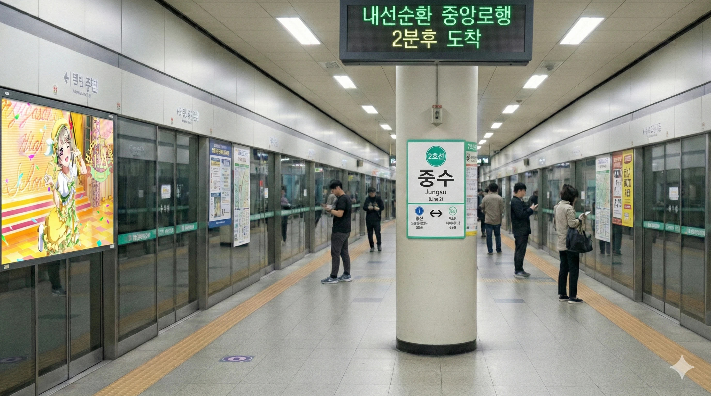
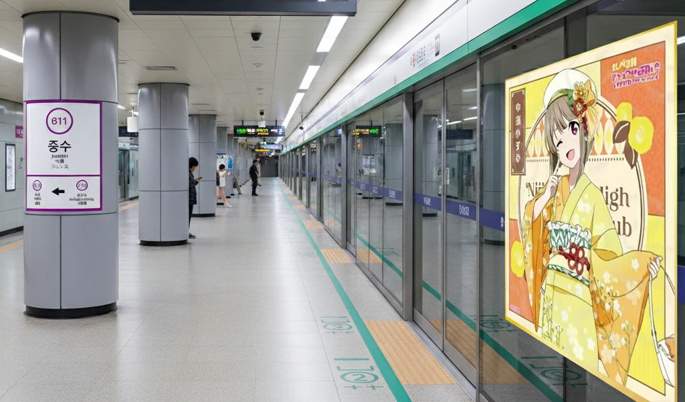

효빈 도시철도 2호선 223번 및 6호선 611번. 효빈광역시 북구 중수동 1-23지하 소재.
최근 수사권 조정 및 검찰 개혁의 일환으로 효빈지방중대범죄수사청(일명 중수청)이 역 인근 원더랜드 빌딩에 신설되면서, 명실상부한 '중수동 중수청(KBI)'의 관문이자 성지순례의 완결판으로 다시 한번 주목받고 있는 역이다.
효빈지방중대범죄수사청이 하필이면 이름값 제대로 하는 이곳 중수동에 안착하기까지의 과정은 그야말로 한 편의 범죄 스릴러이자 휴먼 드라마, 그리고 블랙 코미디였다. 일명 '원더랜드 사태'라 불리는 이 사건은 효빈시 행정사와 부동산 업계에 길이 남을 전설로 회자되고 있다.
처음 정부와 효빈시의 계획은 아주 심플했다. 기존 효빈광역공소청 바로 옆, 법조타운의 절대적 핵심인 중수역 1번 출구 앞 초역세권 노른자위 부지를 매입하여 번듯하게 중수청 본청을 신축하는 것이었다. 그러나 해당 부지와, 플랜 B로 염두에 두었던 남구 평당동 일대의 알짜배기 땅을 하필이면 동일한 악덕 부동산 투기꾼(이하 A씨)이 소유하고 있었다는 게 비극의 서막이었다.
[당시 정부 부지매입팀과 A씨의 협상 분위기 (관계자 증언 재구성)]
정부 관계자: "선생님, 공시지가와 주변 실거래가를 쳐서 섭섭지 않게 쳐드리겠습니다. 국가 중요 기관이 들어설 자리 아닙니까."
투기꾼 A씨: "어허, 나라 돈 쓸 거면서 왜 이리 쪼잔하십니까? 어차피 중수동에 중수청 지을 거면 내 땅 말고 답 없잖아요? 지금 부르신 거 딱 3배 아니면 도장 못 찍습니다."
정부 관계자: "세상에 어떤 미친 국가 기관이 시세의 3배를 주고 땅을 삽니까? 정 이러시면 저희는 남구 평당동 부지로 선회할 수밖에 없습니다."
투기꾼 A씨: "아, 평당동 사거리 그 땅이요? 그거 엊그제부터 평당 단가 2배로 올렸는데? 거기도 내 땅인 거 몰랐나 보네? (비웃음)"
이 미친 업자는 "국가 기관이 들어설 만한 입지는 전부 내 손바닥 안"이라며 배짱을 튕겼다. 정부가 평당동으로 선회하려는 낌새를 보이자 평당동 땅값마저 천정부지로 올려버리며 극한의 알박기를 시도했다.
이 막장 행태에 박효빈 효빈광역시장은 공식석상에서는 "사인 간의 부동산 거래에 지자체가 섣불리 개입할 수는 없다"며 논란 확산을 피하기 위해 원론적인 입장만 고수했다. (자칫하면 시장의 직권남용이나 시장 경제 통제 논란으로 번질 수 있기 때문). 하지만 비공개 대책 회의에서는 결재 서류를 집어던지며 "저 놈 하나 때문에 국책 사업이 장난인 줄 아느냐!"고 극대노하여 쌍욕을 섞어 일갈했다는 소문이 파다했다. 결국 정해진 예산의 한계에 부딪힌 정부 관계자들은 진절머리를 내며 "이럴 거면 차라리 효빈광역시를 배제하고, 아예 외곽인 빈주(덕빈북도)나 다른 지역으로 중수청 입지를 옮겨버리겠다"고 최후통첩을 날려버린다.
시장으로서 사유재산권 침해를 할 수는 없었으나, 분노한 효빈시청은 가장 끈질기고 치밀한 '합법적 괴롭힘'을 시작했다. A씨가 소유한 중수동과 평당동 일대의 건물 전체에 대해 북구청 위생과, 효빈북부소방서 안전점검팀, 심지어 지방국세청 세무조사 인력까지 총동원되어 '먼지 한 톨까지 털어내는 극한의 릴레이 특별 행정 점검'이 들어간 것이다. 복도에 소화기 위치가 1cm 틀어진 것까지 족족 과태료를 때려버리는 자비 없는 행정력 앞에 A씨는 서서히 피가 마르기 시작했다.
중수청이 타 지역으로 날아갈 위기에 처하자 시민들과 이해관계자들도 폭발했다.
이 절망적인 상황을 단번에 뒤집어버린 구원자는 다름 아닌 중수동 안쪽에 땅을 보유하고 있던 찐 나카스 카스미 오시(팬) 건물주(이하 B씨)였다.
사실 B씨는 원래 이 부지에 '5층짜리 초대형 카스밍 테마 굿즈 카페 및 이타샤 전용 주차장'을 지을 원대한 꿈을 안고 영끌을 했던 초하드코어 팬이었다. (실제로 그는 매년 오다이바 팝업 스토어의 VIP이자, 본인 집의 방 하나를 카스미 피규어와 태피스트리로 도배해 놓은, 코믹마켓에서도 알아주는 큰손 네임드 덕후였다).
하지만 중수청이 빈주로 쫓겨날 위기에 처하자, 그는 밤을 새워 번뇌한 끝에 철학적 해탈에 도달해 버렸다. "내 개인의 일개 굿즈 카페 따위보다... 대한민국의 엄중한 국가 수사기관이 내 오시의 이름과 노래(원더랜드)를 달고 세워지는 것이야말로 역사에 남을 진정한 포교이자 성지순례의 끝판왕이 아닐까?"
[입지 선정 극적 타결의 순간 (시청 공무원 회고록 中)]
"...모두가 빈주로의 이전을 기정사실화하고 패배감에 젖어있을 때, B씨가 시장실을 찾아왔다. 그는 카스미가 그려진 핫피를 펄럭거리며 투명 클리어파일에서 도면을 꺼내더니 말했다. '제가 주변 부지를 다 합쳤습니다. 면적 충분합니다. 시세보다 20% 싸게 드릴 테니 당장 계약하시죠.'
재무 담당관의 눈이 튀어나올 뻔했다. '이, 이렇게 싸게 넘기신다고요? 진짜 이유가 뭡니까?'
B씨는 아주 비장한 표정으로 대답했다. '단 조건이 있습니다. 새 청사의 1층 로비 인테리어에는 파스텔 옐로우 색상을 적극 반영해 주시고, 건물의 가칭은 반드시 「원더랜드 빌딩」으로 해주십시오. 그것뿐입니다.'
우리는 그가 무슨 소리를 하는지 1%도 이해하지 못했지만, 알박기 투기꾼에게 지쳐있던 터라 그 제안은 구원의 동아줄과도 같았다. 냅다 도장을 찍었다."
입지가 1순위 후보지보다는 조금 멀어졌다고는 하나(중수역 4번 출구 도보 5분), 면적도 완벽하고 가격도 압도적으로 착한 데다, 여전히 중수동 법조타운 바운더리 안이라는 점에 정부와 시청은 쌍수를 들고 환영했다.
B씨의 정체를 알게 된 네티즌들은 "이 시대의 진정한 영웅", "오타쿠가 도시를 구했다", "사익을 버리고 광기를 택한 다크나이트"라며 열광했고, 상인회에서는 B씨가 길을 지나갈 때마다 박수를 쳤다는 후문이 있다.
결국 B씨의 요구대로 새 청사의 가칭은 대놓고 카스미의 솔로곡 'Wonderland'를 딴 '원더랜드 빌딩'이라고 명명되었다. 이름이 관공서치고 너무 유치하다며 태클을 걸려던 윗선 공무원들도 "시세보다 20% 싸게 넘긴 은인 땅주인의 유일한 소원이다"라는 말에 꿀 먹은 벙어리가 되었다 카더라.
한편, 끝까지 탐욕을 부리며 3배 뻥튀기를 시도했던 그 악덕 부동산 업자 A씨의 결말은 처참함을 넘어 예술적이었다.
그의 악질적인 행태가 언론과 지역 커뮤니티, 그리고 법조계와 상인들 사이에 쫙 퍼지면서 엄청난 공분을 샀다. 그가 소유하고 있던 중수동·평당동 건물 4곳(그중 2곳에서 나오는 막대한 임대료로 달달한 불로소득을 꿀 빨고 있었다)의 기존 임차인들이 "이런 악덕 쓰레기 건물주 밑에서는 장사 안 하겠다", "여기 계속 있다간 이미지 똥돼서 불매운동 맞고 더 망한다"며 줄줄이 방을 빼버린 것이다.
상식적으로 임대차 계약 기간이 남은 상태에서 나가려면 막대한 위약금을 물어야 하지만, 기적 같은 일이 일어났다. 평소 A씨의 갑질에 진절머리가 나 있던, 그리고 이번 중수청 사태로 깊은 빡침을 느꼈던 중수동 일대의 변호사들이 임차인들에게 릴레이 무료 법률 자문을 아낌없이 퍼부어주며 건물의 미세한 하자나 계약서상의 허점을 낱낱이 파헤쳐 합법적이고 위약금 한 푼 없는 손절을 도와준 것이다.
주변 부동산 시세가 중수청 신설 확정 버프로 약상승을 타는 와중에, A씨의 땅만 '알박기 하다 망한 흉물'로 소문이 나며 사람들이 거들떠보지도 않는 기피 시설로 전락했고 땅값이 그야말로 수직 나락으로 꽂혔다. 게다가 매일같이 들이닥치는 시청과 구청의 소방/위생 특별점검에 과태료 폭탄까지 맞자 다급해진 A씨는 임대료를 반값으로 후려치며 "제발 나가지 말라"며 바짓가랑이를 붙잡고 애원했지만, 임차인들은 본인들이 인테리어 비용 등 금전적 손해를 감수하면서까지 짐을 싸서 야반도주하듯 도망쳤다.
결국 이자는 피눈물을 흘리며 국토부와 시청에 연락해 "내 땅을 저 원더랜드 빌딩 부지랑 똑같은 가격, 아니 더 싸게 넘기겠다"고 뒤늦게 백기를 들고 질척거렸지만, 이미 원더랜드 빌딩은 터파기를 끝내고 철근이 절반 이상 올라가고 있는 상황이었다. 정부 관계자의 "이미 늦었습니다. 수고하십쇼."라는 단 한마디 컷트에 A씨는 그 자리에서 주저앉았다고 전해진다.
결과적으로 최고의 황금 입지를 가지고도 과욕을 부리다 본인 땅을 주변 시세보다도 못한 똥값 폐허로 만들어버린 이 사건은, 효빈 지역 부동산 업계와 행정학 전공 수업에서 두고두고 회자되는 '탐욕의 최후와 참교육'의 완벽한 교보재로 영원히 박제되었다.
2호선은 법원로를 따라 지어졌으며, 6호선은 효빈로를 따라 지어졌다. 중수동 신시가지에 있는 도시철도역으로, 효빈에서 승객이 많은 노선인 2호선과 6호선이 환승되는 주요 역이다.
1997년 법원과 효빈광역공소청(구 검찰청) 이전으로 인한 개발로 급격하게 인구가 증가하기 시작했고, 고송 상권과 비교해 조금 작지만 충분히 규모 있는 상권이 형성되었다. 여기에 2026년 효빈지방중대범죄수사청(원더랜드 빌딩)까지 인근에 들어서면서 법조타운의 거대한 양대 산맥이 완성되었다. 타 지역 간 출퇴근 수요도 많아지면서 효빈광역시에서 매우 붐비는 역 중 하나가 되었다. 중수동 자체도 고송동, 청엽동, 평당동 다음으로 큰 동네인 점도 있고, 청엽구에 있는 공단과 이동이 활발히 진행되며, 고송신도시와도 서로 이동이 잦기 때문에 꽤 큰 이용객 수를 보이는 곳이다.
2, 6호선의 유실물센터가 이 역에 위치하고 있다.
|
2
6
|
||
|---|---|---|
| 번호 | 주요 시설 및 방향 | 비고 |
| 1 | 효빈고등법원, 효빈광역공소청(구 검찰청), 효빈지방법원, 효빈지방공소청(구 검찰청), 남전중학교 | |
| 2 | 중수2동행정복지센터 | |
| 3 | 효빈고등법원, 효빈광역공소청(구 검찰청), 효빈지방법원, 효빈지방공소청(구 검찰청), 남전중학교 | |
| 4 | 중수베이커리마을, 효빈지방중대범죄수사청 (원더랜드 빌딩) | KBI 성지순례 관문 |
| 5 | 중수베이커리마을 | |
| 6 | 효빈고등법원, 효빈광역공소청(구 검찰청), 효빈지방법원, 효빈지방공소청(구 검찰청), 남전중학교, 중수지하상가 진입로 | |
| 7 | 효빈북부정류장, HJ몰 중수점, 효빈북부경찰서, 중수지하상가 진입로 | |
| 8 | 효빈북부정류장, HJ몰 효빈점 | |
| 9 | 중수4동행정복지센터 | |
| 10 | 중수오거리 | |
| 11 | 중수고등학교, 생선초등학교 | |
| 12 | 중수고등학교, 생선초등학교 | |
| 중수역 이용객 통계 | |||
|---|---|---|---|
| 연도 | 2 | 6 | 총합 |
| 2020년 | 15,616명 | 38,834명 | 54,450명 |
| 2021년 | 16,826명 | 39,675명 | 56,501명 |
| 2022년 | 27,178명 | 49,051명 | 76,229명 |
| 2023년 | 28,020명 | 49,999명 | 78,019명 |
| 2024년 | 27,394명 | 50,921명 | 78,315명 |
단일 노선 순위로 볼 때 6호선 중수역은 6호선 1위다. 중수↔고송 간 승객이 매우 많으며, 고송지역에서 효빈공단이나 헌이송공단 출퇴근, 중앙로 출퇴근 등 여러 많은 수요를 흡수하고 있기 때문에 여러 곳에서 오는 사람들이 모인다. 6호선 중수역은 청엽지역에서 중수지역을 오가는 수요와 출퇴근 수요가 겹쳐 정말 몰리는 역이다.

| 남전 ↑ | |||
| │ | 하 | 상 | │ |
| ↓ 입희 | |||
| 상 | 2 효빈 도시철도 2호선 (완행/급행) | 우전·당가·신흥 방면 (급행 정차) |
| 하 | 2 효빈 도시철도 2호선 (완행/급행) | 북효빈역·시청·고송교차로·효빈대학교·중앙로 방면 (급행 정차) |

| 오내 ↑ | |||
| 하 | │ | │ | 상 |
| ↓ 북구청 | |||
| 상 | 6 효빈 도시철도 6호선 | 덕현 · 마잡 방면 |
| 하 | 6 효빈 도시철도 6호선 | 고송교차로 · 고송나루 방면 |
효빈광역시 북구 중수동 일대 지하를 약 910m 길이로 관통하는 대형 지하도상가. 단순히 물건을 파는 곳을 넘어, 삭막한 법원·공소청·중수청 건물들과 화려한 상업 시설, 그리고 자연(강변공원)을 지하에서 완벽하게 연결해 주는 기묘한 완충지대 역할을 톡톡히 수행하고 있다.
사가라 마유(마유치)가 효빈시 투어 중 중수역을 방문했을 때, 유치장에서 막 출소한 혐오자들(A씨, 윤재훈)이 난동을 부리려다 제압당한 사건이다. 보몽역 등지에서 난동을 부려 구금되었다가 풀려난 이들은 반성은커녕 "시장 관저가 있는 중수역을 타격하여 일본 아이돌과 오타쿠 시장을 몰아내자"며 습격을 모의했다. 그러나 인터넷 커뮤니티에 범행 예고 글을 올리는 멍청한 짓을 저지른 덕분에 잠복 중이던 경찰에게 제압당했다.
덕빈권 광역급행철도 HDTX-B선이 향후 개통될 경우 중수역에 경유할 예정에 있어, 기존의 2호선 및 6호선과의 환승 체계가 한층 더 강화될 전망이다. 이로 인해 향후 트리플 환승역으로 거듭나며 효빈 북부 권역 및 덕북권 간선 교통의 핵심 거점 역할을 수행할 것으로 기대된다.